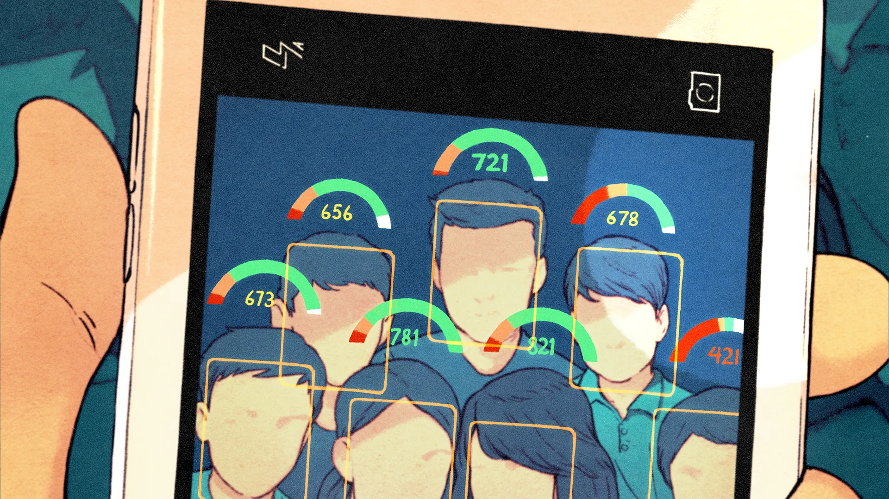

Abstract
Predictive policing and social credit systems have been gaining attention due to their potential to enhance public safety and security. However, the implementation of such systems raises several ethical and social concerns. In this paper, we analyze two case studies: the Pasco County Sheriff Department’s predictive policing in Florida, and the Chinese Social Credit System. We discuss the ethical implications, community impact, uniqueness, and broader view of these systems to draw conclusions on the challenges in ensuring the ethical use of automated systems for predictive policing and social credit scoring.
Introduction
In recent years, advancements in artificial intelligence (AI) and big data analytics have led to the development of predictive policing and social credit systems [11]. These systems are designed to improve public safety, reduce crime, and foster trust within communities by analyzing data to predict and prevent criminal behavior, as well as to evaluate citizens’ social and financial behavior. By doing so, they enable the development of robust policing strategies and tactics to address crime. Governments and law enforcement agencies worldwide have adopted these technologies, aiming to leverage their potential benefits [1].
Techniques used in predictive policing include data mining, crime mapping, geospatial prediction, and social network analysis. These methods can be used to anticipate localized crime spikes, inform city and neighborhood planning, and aid in police management decisions. The use of predictive models in law enforcement has shown promising results in the optimal deployment of resources to prevent and reduce crimes [12].
While automated systems such as predictive policing hold great potential to bring about positive changes in the law enforcement industry,[7] their deployment also raises significant ethical concerns. These include the perpetuation of historical biases and privacy violations [4]. As a result, it is imperative to carefully examine and address these ethical issues and challenges to ensure that the use of such systems incentivizes better behavior and upholds the fundamental values of justice and fairness.
This paper aims to examine the ethical challenges involved in using automated systems for predictive policing and social credit scoring. By analyzing two case studies—the first, on Pasco County Sheriff Department’s Intelligence-Led Policing (ILP) program in Florida for predictive policing, and the Chinese Social Credit System for social credit—we explore the community impact, ethical implications, unique features, and broader view of these systems.
Through our analysis, we hope to contribute to the ongoing discussion on the ethical use of AI and big data in the context of predictive policing and social credit systems, ultimately offering recommendations for future implementations.
Literature Survey
Predictive Policing
The rise of big data systems and machine learning has led to an increase in the use of predictive policing techniques [10]. Despite its growing popularity, predictive policing has yielded mixed results due to several challenges, such as the loss of context in predictive analysis, the lack of transparency in the models used, and ethical concerns regarding privacy and data collection [14].
Two well-known predictive policing programs, LASER and PredPol, serve as examples. While LASER aimed to identify areas with a high likelihood of gun violence [6], PredPol focused on calculating hotspots for property-related crimes. LASER was shut down in 2019 due to significant consistency issues discovered through an internal audit. A common issue with these programs is the lack of transparency; many police departments do not disclose the information or technology used to generate their predictive policing systems.
Critics argue that predictive policing could threaten rights protected by the Fourth Amendment, which requires “reasonable suspicion” for law enforcement actions [5]. However, proponents contend that predictive tools make it easier for police to identify reasonably suspicious individuals [8]. Another concern is the phenomenon of “tech-washing,” where racially biased policing methods are given the appearance of objectivity due to the use of computer algorithms. This is especially problematic when algorithms trained on historical data perpetuate existing biases. The ultimate goal of predictive policing is to transition law enforcement from a reactive to a proactive stance, emphasizing crime prevention rather than merely responding to incidents [7].
Real-World Applications
Detailed in this section are real-world examples of predictive policing and social credit systems. Per each system detailed, subsections for a brief description, their impact on the community, relevant ethical implications, unique features and the broader view of the system at hand follow.
Pasco Country Sheriff Department (Florida)
Description
The Pasco County Sheriff Department instituted The Intelligence-Led Policing Section (ILP) on June 14, 2011. Initially established as a group to “advance the agency’s crime fighting initiatives to a modern-day philosophy”, after much controversy the program was discontinued sometime between 2021 and 2022 [13].
This program implemented a predictive policing system which attempted to catch potential criminal offenders before they would, supposedly, commit a crime. Under this program, the potential offenders were denoted as prolific offenders. The Sheriff Department maintained a list of said prolific offenders that they deemed were likely to commit crimes in the future. According to a “crude computer algorithm”, members of the community would be placed on this list based on factors including a person’s criminal record, whether they have been suspected of a crime, whether they have witnessed a crime, or even whether they were a victim of a crime [9].
In addition to the aforementioned prolific offenders list, an investigation by the Tampa Bay Times has also revealed the use and maintenance of an at-risk students list by the Pasco Country Sheriff Department [9]. According to the agency’s internal intelligence manual, factors such as grade point average, attendance, involvement in a custody dispute, or even, again, being a victim of a personal crime, all played a role in students being placed on said list. The school districts provide much of this sensitive and private data to the Sheriff Department with full access, raising legal concerns of data privacy. The Pasco Sheriff Office was no longer allowed to access student data post May 3, 2021.
Community Impact
Once placed onto the prolific offenders list, people were subject to intimidation and harassment by officers of the police department instructed to monitor and gather information on their subjects. Officers would show up unannounced to homes to even interrogate friends and families of listed peoples, unnecessarily harassing innocent civilians in the process. When met with uncooperative subjects, officers would also cite them egregious amounts, typically in the thousands, for frivolous property code violations such as having tall grass or missing house numbers [15]. A former Pasco County deputy described that the department had ordered them to “make their lives miserable until they move or sue” [15]. Community members are being forced out of their homes by constant fear of harassment from the police department. This is a conscious action by the department, suspected to be in hopes of lowering crime rate in the area. And as seen above, not only are the listed peoples subject to this, but innocent relatives and friends too.
Regarding the at-risk students list, in the summer following the initial implementation of this list, school resource officers were reported to make “hundreds of home visits to at-risk kids”, offering support to children and families, but also questioning them of local crimes and even making arrests of kids who had violated probation or curfew orders [2]. The intelligence manual also reportedly encouraged officers to work relationships with to students to discover “seeds of criminal activity” and collect information accordingly. Unfortunately, since the students are unable to know whether or not they have been flagged as at-risk it is difficult to fully evaluate the effects of such a system on the student population. Though, if this list is used at all similarly to the prolific offenders list, we can expect that listed students are likely suffering from similar harassment by school resource and correctional officers alike.
Ethical Implications
An ethical issue paramount to such a predictive policing system as described is discrimination. With a predictive policing system based on data from an already discriminatory criminal justice system, the usage of such a system only works to perpetuate the same injustices. The criminal justice system in the United States disproportionately targets those of minority ethnic groups and low income. So, the predictive policing system of Pasco County follows and targets the same marginalized groups of people. Additionally, a further ethical concern arises when even those with no criminal history, but have simply been suspected of a crime, are also subject to unwarranted harassment. By definition, this is discrimination towards those suspected of a crime, even though they may have been found innocent. With regards to the at-risk students list, discrimination towards those involved in custody disputes is also a concern, as it could be seen as discrimination based on family status [2]. Policing should be ethical and lack any forms of discrimination, and these predictive systems undermine those essential characteristics.
In addition to discrimination, predictive policing in the United States raises concerns of violating constitutional rights to protection against unreasonable searches and seizures, protected under the Fourth Amendment. Specifically, when Pasco County officers show up unwarranted to homes with the goals of collecting information, homeowners have the right to refuse and ask the officers to leave. When the officers continue to poke and prod them without a warrant or any reasonable suspicion, they violate the homeowner’s Fourth Amendment rights [15]. Also, when harassing family members and friends of those on the prolific offenders list, officers violate the constitutional right to freedom of association, protected by the First Amendment, as well as the right to not be punished for another’s actions, protected under the Due Process Clause of the Fourteenth Amendment [15]. As citizens of the United States, we can reasonable expect government officials to act in accordance with our constitutional rights. However, the predictive policing tactics of Pasco County do exactly the opposite, making it entirely unethical.
Uniqueness
The Pasco County case in predictive policing is unique in its revealed integration of school performance data and abuse history in its policing efforts towards children. According to the Pasco Sheriff’s Office Intelligence Manual, children which have recorded to have witnessed or experienced household violence of even gotten a D or an F in school are factors which make a child much more likely to become a criminal. This was an effort to identify future criminals in the youth population of a school system [2]. This supposedly led to numerous interventions with at-risk students in the summer following the implementation of the at-risk students list. School resource officers have also been reportedly praised for contributing to intelligence briefings and filing field interview reports on interactions with at-risk kids [2]. This form of investigation into children for their likelihood to become criminals is unprecedented, as far as the public knows.
Although identifying students at risk of dropout or failure in school has seen much implementation throughout history, the usage of school data in policing has only recently been brought to light. Because of the intention to keep these programs secret from the public, the only case of such a system brought into the public eye was that of Pasco County, detailed above. There are likely multiple other implementations of a similar system which have not yet been revealed, but to the public’s knowledge, this is the only pertinent case.
Broader View
Generally, the public has conveyed great disdain towards Pasco County’s implementation and usage of a predictive policing system. Affected members of the community have worked closely with investigative journalists and law corporations in order to publicize their grievances and fight for their constitutional rights. This case has realized the exact fears which the public has already had on algorithm-assisted policing efforts. And the vast number of new outlets which have picked up reporting on the case supports this.
Additionally, this case, specifically, has led to the involvement of the federal government in investigating the suspected injustices of such a system, with the Department of Education uptaking an investigation into the usage of school data by the Pasco County Sheriff Office. This conveys a necessity for change as a result of public outrage. Citizens do not want their constitutional rights to be breached, so they are rightfully upset when a case like this arises.
Conclusion
We have looked at various factors and challenges in the ethical use of automated systems for predictive policing and social credit scoring in this paper. Although their potential in both of these scenarios is undisputed, we still need to address underlying issues related to privacy, transparency and biases present in the systems. We saw some major issues in two different predictive policing scenarios. In the LASER project, historical biases, lack of context and transparency ultimately led to project shutdown. Concerning the Pasco County case, we see that abuse of power by the authorities and the failure of the predictive algorithm motivated people to undertake massive protests against the system.
The Social Credit System (SCS) is helping China achieve financial transparency, reduce crime and increase social cohesion amongst its population. However, this comes at the cost of privacy, discrimination and restriction of personal freedom. In a way, this is an oppressive and dictatorial manner of controlling the entire population of a country and can hinder creativity and freedom of expression, both of which are essential qualities to a nation’s progress.
Future Directions
From this work, we believe that future research should be in developing a model for automated decision making systems that can function without the ethical concerns associated with predictive policing and social credit. To create a better framework for the future, all stakeholders must acknowledge the importance of privacy, the need to eliminate discrimination in the algorithms being developed, and address various other issues.
Future work must consider ways to de-bias the automated algorithms used in predictive policing. This includes methods for mitigating biases in predictive policing algorithms, such as novel techniques for bias detection and correction, as well as the integration of fairness-aware machine learning algorithms to ensure that these systems do not perpetuate existing inequalities. We should also investigate the potential benefits and drawbacks of adopting open-source approaches to predictive policing software. This would allow for greater public scrutiny and facilitate ongoing evaluation of the efficacy and fairness of these tools. Future work can also consider methods for holding both developers and law enforcement agencies accountable for the deployment and consequences of predictive policing systems.
As for social credit, further research is needed to understand the long-term psychological and societal effects of social credit systems, particularly in terms of public trust, individual privacy, and the potential for social unrest. This could involve both quantitative and qualitative studies that explore the experiences of communities subjected to social credit and the attitudes of the government when using these tools. Finally, as a complement to social credit and predictive policing, we can also consider alternative approaches which do not involve automated decision making. By comparing the efficacy and ethical implications of these approaches, researchers can contribute to the development of a more holistic understanding of how we can prevent crime.
References
[1] 179. Predictive policing explained, Apr 2020.
[2] Neil Bedi and Kathleen McGrory. Pasco’s sheriff labels kids potential criminals with grades, abuse history. Tampa Bay Times, Nov 2020.
[3] Eunsun Cho. The social credit system: Not just another chinese idiosyncrasy. Journal of Public and International Affairs, 2020.
[4] Jeremy Davis, Duncan Purves, Juan Gilbert, and Schuyler Sturm. Five ethical challenges facing data-driven policing. AI and Ethics, 2(1):185–198, Feb 2022.
[5] Ángel Díaz. Data-driven policing’s threat to our constitutional rights, Sep 2021.
[6] Tim Lau. Predictive policing explained. Brennan Center of Justice, 2020.
[7] Kevin Macnish, David Wright, and Tilimbe Jiya. Predictive Policing in 2025: A Scenario, pages 199–215. Springer International Publishing, Cham, 2020.
[8] Margo McGehee. Predictive policing technology: Fourth amendment and public policy concerns, Jul 2022.
[9] Kathleen McGrory and Neil Bedi. A futuristic data policing program is harassing pasco county families. Tampa Bay Times, Sep 2020.
[10] Albert Meijer and Martijn Wessels. Predictive policing: Review of benefits and drawbacks. International Journal of Public Administration, 42(12):1031–1039, 2019.
[11] Beth Pearsall. Predictive policing: The future of law enforcement?
[12] Walter L. Perry, Brian McInnis, Carter C. Price, Susan Smith, and John S. Hollywood. Predictive Policing: Forecasting Crime for Law Enforcement. RAND Corporation, Santa Monica, CA, 2013.
[13] Dan Sullivan and Matt Cohen. Pasco sheriff discontinues controversial intelligence program, court documents say. Tampa Bay Times, Mar 2023.
[14] Simone Tulumello and Fabio Iapaolo. Policing the future, disrupting urban policy today. predictive policing, smart city, and urban policy in memphis (tn). Urban Geography, 43(3):448–469, 2022.
[15] J. Justin Wilson. Pasco predictive policing. Institute for Justice, Jan 2023.
Social Credit Systems
China’s Social Credit System (SCS) is a prime example of the ethical challenges associated with Social Credit Systems. The SCS monitors the behavior of all citizens and enterprises, assigning social credit scores based on their actions. Individuals who violate laws are placed on an online “blacklist,” while trustworthy individuals are placed on a “red list.” Both lists are publicly accessible, and various restrictions can be imposed based on social credit scores, such as financial or legal penalties for failing to pay taxes or attend court summons [3].
The SCS has a psychological basis; by displaying rule breakers online, it holds them accountable, while those on the red list serve as models for others. However, the system raises concerns about the potential erosion of individual free will, which could lead to citizens feeling constrained or controlled. This, in turn, may result in growing unease and resentment, potentially culminating in civil unrest or even revolution.